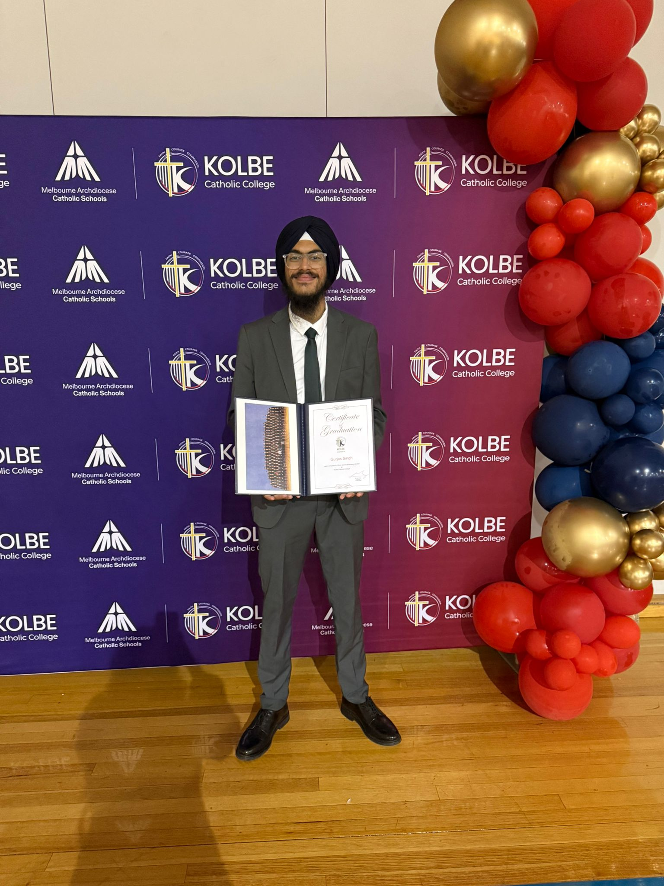

About Me

My Story
Hi, I'm Gurjas Singh — a 19-year-old student from a proud Indian and Punjabi background, currently studying a Diploma of Cybersecurity at La Trobe College, Bundoora, Melbourne. I come from a proud Indian and Punjabi background but am fortunate enough to have been living in Australia since 2008, and in the process I've developed a consistent fluency in both English and my mother tongue of Punjabi.
My overall journey into cybersecurity initially wasn't something that I was fully sure about — I'll be honest, I was very nervous getting myself into it. Jumping into a field that I initially lacked knowledge about felt like a really big leap, even for me since I keep myself very open and optimistic to trying out new things, with the people closest to me backing me every step of the way. But as my first semester nears its close, I can gladly admit I would definitely go back and reassure my past self that we would end up growing into and loving this field — and to leave it up to the hard work ahead.
What really pulls me most towards cybersecurity is how dynamic it is and the rate at which it continues to evolve. I really tend to enjoy the deeper science and meaning behind how machine systems work, understanding real threats, and just knowing deep down that this career genuinely plays a significant part in contributing to making the world a safer place in an increasingly digital society — far more impactful than people give it credit for.
As someone who has been an athlete for many years, contribution deeply drives me — whether it includes playing my individual part or working within a team towards something bigger, I always show up fully and give my absolute all. I have absolutely no problem starting from the ground up at an entry-level position and, if anything, I welcome it — because I know the experience and knowledge I gain early will be the ultimate foundation required for progressing into higher senior and leadership roles down the line.
I'm genuinely really intrigued about the path that lies ahead — the connections I'll be making, the adversities I'll face, and the greater impact I'll eventually have. This is just the beginning.
Education
La Trobe College Australia, Bundoora
Currently in Semester 1 — studying foundational concepts in networking, security principles, web development and systems.
Kolbe Catholic College, Melbourne
Subjects: Accounting, Commerce, English Literature, Foundation Mathematics, English, Psychology, Digital Learning (Year 11), Forensic Science, Sport Coaching.
Achievements
-
🎓 VCE Graduation Certificate
Successfully completed Year 12 VCE at Kolbe Catholic College, 2024. -
🐯 Best Group Award — Year 10 Design Challenge
Won best group award out of the entire year level for designing a solution to prevent the endangerment of the Sumatran Tiger. The idea was recognised and taken up by people working in that conservation department. -
🏅 Sportsmanship Athlete of the Year Award
Recognised for outstanding sportsmanship and leadership on and off the court throughout the school year. -
🏀 Back-to-Back Basketball Finals Champion
Won 2 medals for back-to-back championship victories with the school basketball team — demonstrating consistency, teamwork and competitive drive.
Career Goals
My goal is to build a solid and well-rounded foundation in cybersecurity and progress through the field over time. I'm currently aiming toward securing an entry-level Cybersecurity Analyst role, where I can gain hands-on experience and exposure in a real-world environment.
Long term, I aspire to transition into Network Security Engineering — a more specialised and technical area that deeply interests me. Beyond the role itself, my bigger ambition is to make a genuine and lasting contribution wherever I'm placed — because working toward something greater than yourself is what truly drives growth.